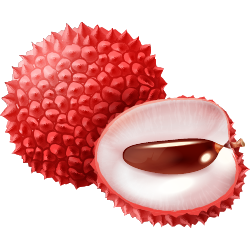
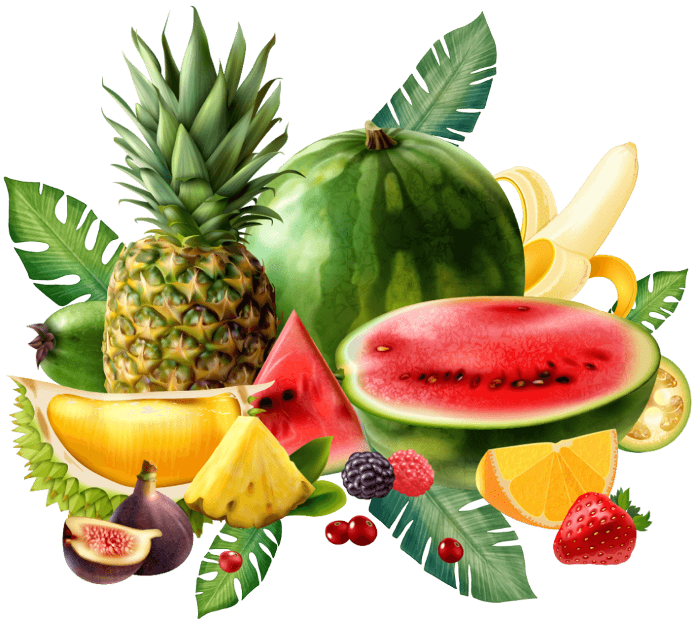
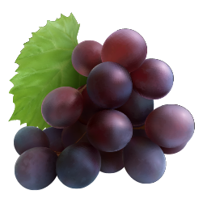
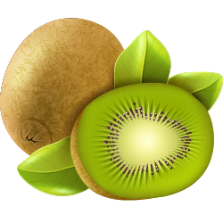
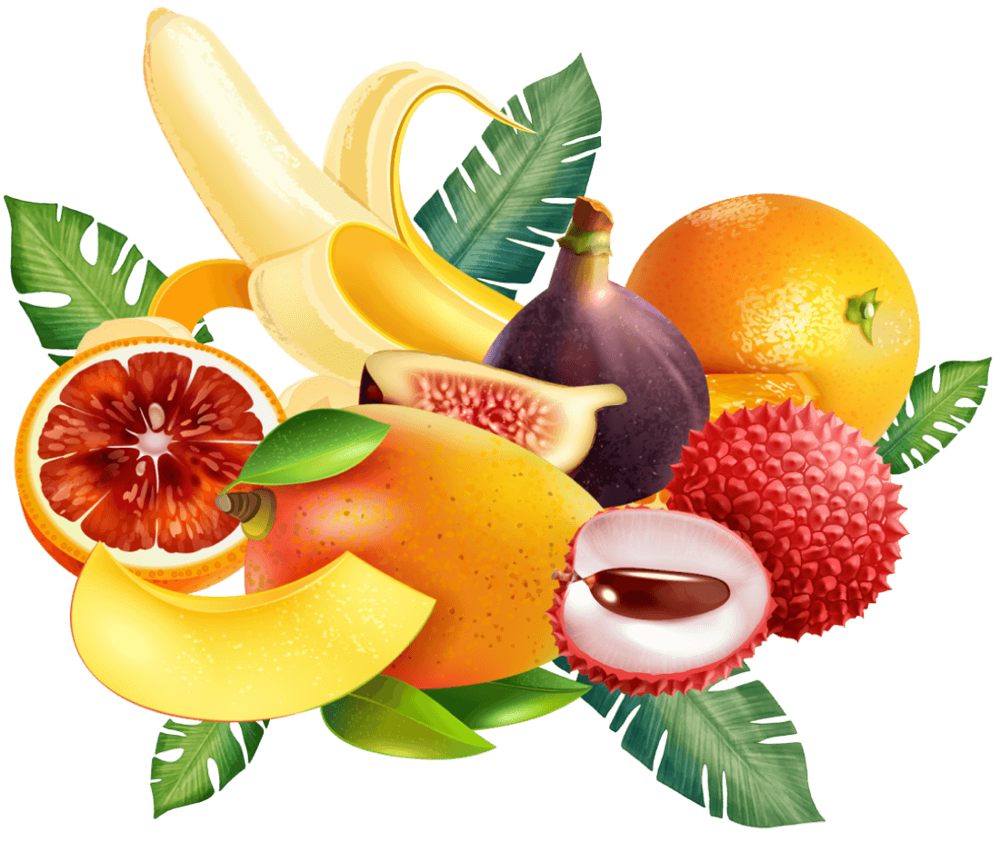
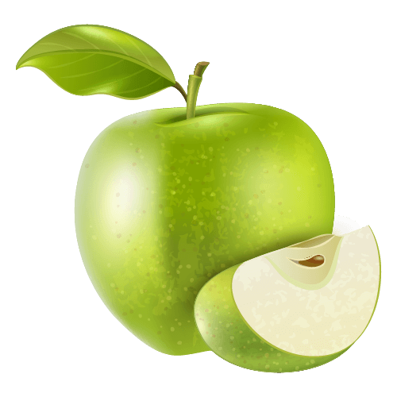
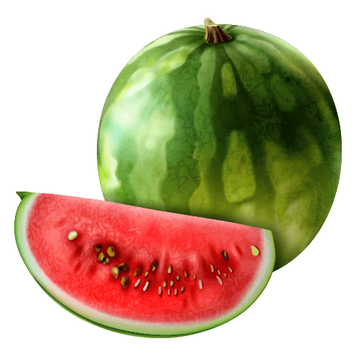
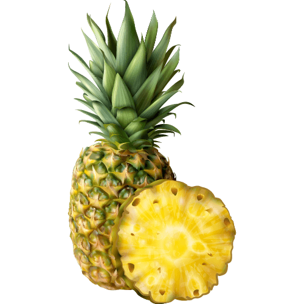
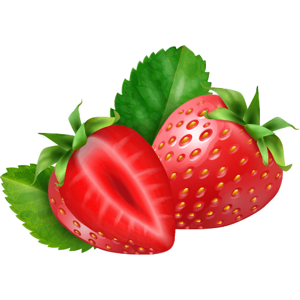
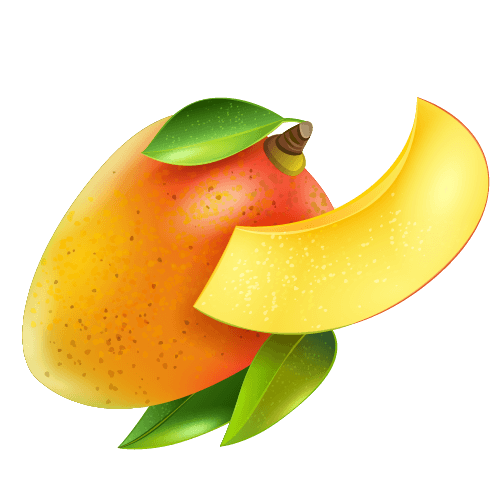

Fresca e sumarenta
Fruta doce e vibrante, escolhida pelo seu sabor natural.
Fresca da colheita, cheia de vida
Cores vibrantes, sabor autêntico e fruta fresca para tornar especiais os momentos de todos os dias.
Descobrir a colheita ✳ Escolhida com cuidado, pronta a saborear
Um pouco de frescura em cada dentada
Pequenos prazeres da natureza, para desfrutar todos os dias.

Fruta doce e vibrante, escolhida pelo seu sabor natural.

Os sabores de sempre para tornar especial qualquer lanche.

O melhor da natureza para desfrutar e partilhar.

Da terra para a sua mesaDe produtores que cuidam
Valorizamos os produtores que tratam cada colheita com atenção. Descubra fruta escolhida pela qualidade, pelo sabor e pela alegria que traz à sua mesa.
Escolhida com cuidado
Fruta colorida, saborosa e pronta para fazer parte do seu dia.

Crocante · favorita do pomar

Sumarenta · sabor de verão

Tropical · toque agridoce
Doce · lanche prático

Vibrante · doce e delicado

Suave · amadurecida ao sol
Uma nota fresca da nossa parte
Receba novidades da colheita, ideias para servir e notícias da nossa comunidade de fruta.